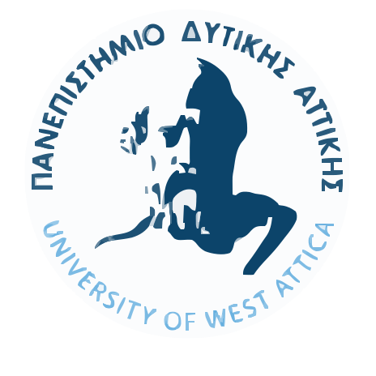
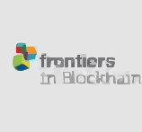

Ερευνητής και εκπαιδευτής με εξειδίκευση στην ασφάλεια blockchain, τα κατανεμημένα συστήματα και τις αποκεντρωμένες εφαρμογές. Σχεδιάζω και αναπτύσσω DApps, υλοποιώ και λειτουργώ δίκτυα Hyperledger Besu (QBFT) με ενσωμάτωση Blockscout και Faucet, και τα μετατρέπω σε πρακτικά εργαστηριακά περιβάλλοντα.
Σχετικά
Εξειδίκευση
Διδακτορικό στην Επιστήμη Υπολογιστών — με ειδίκευση σε κατανεμημένα συστήματα, μηχανισμούς συναίνεσης και ασφάλεια δικτύων.
Project Manager — συντονισμός τεχνικών & εκπαιδευτικών Web3 έργων, διαχείριση ομάδων, χρονοδιαγραμμάτων και παραδοτέων σε ευρωπαϊκά ερευνητικά έργα.
Project ManagementΔιδακτικοί Ρόλοι
Διδάσκω στο Πανεπιστήμιο Δυτικής Αττικής (UniWA) και στο Πανεπιστήμιο Μάλτας. Συμμετέχω ως Senior Researcher σε ευρωπαϊκά και εθνικά έργα και είμαι συν‑συγγραφέας του πρώτου ελληνικού ανοικτού συγγράμματος για το blockchain (Κάλλιπος).
Διδασκαλία & εργαστήρια σε Blockchain, P2P Networks, Cybersecurity και εργαστήρια ασφάλειας DApp.
Ερευνητικά Ενδιαφέροντα
- 🧩 zero-knowledge proofs (ZKPs), oracles, ενίσχυση πρωτοκόλλων, verifiable credentials
- 🔒 Ρυθμιστικό πλαίσιο: ασφάλεια blockchain & επιχειρησιακή ανθεκτικότητα (DORA)
- 🧱 Υποδομές Blockchain: Besu QBFT δίκτυα, Blockscout, Faucet, λειτουργίες validator
- 🏛️ Αποκεντρωμένοι Αυτόνομοι Οργανισμοί (DAOs) — μοντέλα διακυβέρνησης, ψηφοφορία, διαφάνεια
Επαγγελματικές Δραστηριότητες
- 🤝 Επαγγελματικοί ρόλοι: Μέλος του Academic Advisory Board της INATBA και Associate Editor στο Frontiers in Blockchain.
- 🌐 Founder, Web3Edu Initiative — ανάπτυξη εκπαιδευτικού και διακυβερνητικού πλαισίου για αποκεντρωμένες μαθησιακές κοινότητες.
Συνεργασίες & φορείς


Επιλεγμένα Ερευνητικά Έργα
Τρέχοντα Έργα
TARDIS - Trustworthy and Resilient Decentralised Intelligence for Edge Systems
Έργο Horizon Europe με στόχο τη μείωση της πολυπλοκότητας και του κόστους ανάπτυξης ετερογενών συστημάτων edge και swarms τεχνητής νοημοσύνης.
Κύρια Σημεία Ρόλου:
- Ρόλος: Senior Researcher για το ΕΚΠΑ
- Υπεύθυνος για το WP7: Υλοποίηση & Αξιολόγηση
- Συντονισμός των Use Cases και των αντίστοιχων παραδοτέων
GENERA – Re-vitalising Energy Transition in Touristic Islands
Έργο LIFE EU που υποστηρίζει τις τοπικές αρχές στη μετάβαση προς ένα βιώσιμο και απανθρακοποιημένο ενεργειακό σύστημα, με έμφαση σε τουριστικές περιοχές.
Κύρια Σημεία Ρόλου:
- Ρόλος: Senior Researcher & καθήκοντα Project Management για το UniWA
- Υπεύθυνος για τον σχεδιασμό στρατηγικής Web 3.0 και την ανάπτυξη εκπαιδευτικού παιχνιδιού για τη μετάβαση στην πράσινη ενέργεια.
- Κύρια συμμετοχή σε συναντήσεις και δράσεις διάχυσης
Ολοκληρωμένα Έργα
FASTER - First responder Advanced technologies for Safe and efficienT Emergency Response
Έργο Horizon EU που εξετάζει τον ρόλο των ομάδων πρώτης ανταπόκρισης σε όλα τα στάδια διαχείρισης κρίσεων — σχεδιασμό, λογιστική υποστήριξη, εκπαίδευση, επικοινωνία και επιχειρησιακή διαχείριση.
Κύρια Σημεία Ρόλου:
- Ρόλος: Senior Researcher & καθήκοντα Project Management για το UniWA
- Παραδοτέα εργαλεία: MORSE (αναγνώριση χειρονομιών), RESCUE (κρυπτογραφημένα BLE μηνύματα χωρίς υποδομή), Smart Textiles (αισθητήρες), K9 collar (ειδοποιήσεις διάσωσης)
- Εστίαση: AI, ασφαλής επικοινωνία, κρυπτογράφηση και mobile εφαρμογές για ομάδες πρώτης ανταπόκρισης
Πρόσθετα Έργα
ARTEMIS – Secure Supply Chain Traceability Management
Έργο ΕΣΠΑ (Ερευνώ – Καινοτομώ) με στόχο την ανάπτυξη κατανεμημένης αρχιτεκτονικής λογισμικού και υλικού για την ασφαλή ιχνηλασιμότητα εφοδιαστικών αλυσίδων, με χρήση blockchain και έξυπνων συμβολαίων.
Κύρια Σημεία Ρόλου:
- Ρόλος: Senior Researcher & καθήκοντα Project Management για την iTrack Services (SME)
- Συμμετοχή στον σχεδιασμό της αρχιτεκτονικής και στη διασύνδεση με την πλατφόρμα της εταιρείας
- Συμμετοχή σε συναντήσεις και προετοιμασία παραδοτέων
Προσωπικό Portfolio Ανάπτυξης
Ενεργά Έργα
Proof of Escape (PoE)
Παιχνιδοποιημένη Web3 DApp για εκμάθηση blockchain με κουίζ και token rewards.
Κύρια Σημεία Ρόλου:
- Κουίζ πάνω σε θέματα blockchain
- Ανταμοιβές σε tokens
- Ειδική ανταμοιβή: ένα NFT που ξεκλειδώνει το επόμενο επίπεδο (όταν είναι έτοιμο)
LDL Fantasy League DApp
Διαχείριση Fantasy League με SBT ταυτότητα, ανταλλαγές μεταξύ πολλών ομάδων και μηχανισμό ψηφοφορίας.
Κύρια Σημεία Ρόλου:
- Backend: Flask + Google Sheets API + PostgreSQL
- On‑chain: ψηφοφορία trades + SBT προφίλ
- Μηχανισμός DAO για διακυβέρνηση της λίγκας (ψηφοφορία κανονισμών & εγκρίσεων trades)
Web3Edu Governance Framework
Πλαίσιο διακυβέρνησης για αποκεντρωμένα εκπαιδευτικά οικοσυστήματα, συνδυάζοντας SBT ταυτότητα, DAO voting models και προαιρετικά ZKPs για ιδιωτικότητα.
Κύρια Σημεία Ρόλου:
- Σχεδίαση modular μηχανισμών διακυβέρνησης για συμμετοχική λήψη αποφάσεων
- Ενσωμάτωση SBT ταυτότητας για διαφάνεια και ασφάλεια
- Πειραματισμός με ZKP‑based ανώνυμη ψηφοφορία
Εργαλεία Υποδομής & Έρευνας
Besu QBFT Research Network
Ιδιωτικό δίκτυο Hyperledger Besu (QBFT) για έρευνα πάνω σε consensus, ιδιωτικότητα και λειτουργική ανθεκτικότητα.
Κύρια Σημεία Ρόλου:
- Δίκτυο Besu (v25.8.0) με 5 validators, Blockscout explorer & Faucet
- Ενισχυμένοι κόμβοι & monitoring (metrics, logs, alerts)
- Εφαρμοσμένα smart contracts: SBTs, NFTs, ZKPs, oracles
Blockchain Security Labs
Εργαστήρια πρακτικής εξάσκησης σε consensus μηχανισμούς, μοτίβα επιθέσεων και προσομοιώσεις DeFi περιστατικών, εμπνευσμένα από τα bZx oracle/flash‑loan exploits.
Κύρια Σημεία Ρόλου:
- Σχεδίαση oracles και μηχανισμοί άμυνας σε price‑feeds (TWAPs, circuit breakers)
- Ανάλυση περιστατικών & trace analysis (τύπου bZx oracle/flash‑loan)
Πόροι Ελεύθερης Πρόσβασης
Web3 Sources (Curated Repository)
Συλλογή επιλεγμένων πόρων και εκπαιδευτικού υλικού για Web3, blockchain και κατανεμημένα συστήματα.
Δημοφιλείς Δημοσιεύσεις
Blockchain
Cybersecurity
ML / AI
IoT
A few popular/representative publications are listed here. For the full list, please see my CV or Google Scholar.
Blockchain & Web3
Επισκόπηση απειλών ασφάλειας και λύσεων για επικοινωνίες Machine‑to‑Machine (M2M)
G. Tuna, D.G. Kogias, V.C. Gungor, C. Gezer, E. Taşkın, E. Ayday
Journal of
Parallel and
Distributed Computing 109 (2017) 142–154
Η εργασία εξετάζει αναλυτικά τις προκλήσεις ασφαλείας σε επικοινωνίες M2M και λύσεις μετριασμού· μία από τις πλέον αναφερόμενες συνεισφορές μου.
Εφαρμογή της τεχνολογίας blockchain στη δυναμική διαχείριση πόρων δικτύων επόμενης γενιάς
M. Xevgenis, D.G. Kogias, P. Karkazis, H.C. Leligou, C. Patrikakis
Information
11(12), 2020
Συνδέει το blockchain με αυτοματοποιημένη και ασφαλή ανταλλαγή πόρων μεταξύ παρόχων· υλοποίηση και αποτελέσματα επίδοσης σε δοκιμαστικό περιβάλλον cloud.
IoT & Ασύρματα Συστήματα
Αναγνώριση συμπεριφοράς σκύλων διάσωσης με φορετούς αισθητήρες και βαθιά μάθηση
P. Kasnesis, V. Doulgerakis, D. Uzunidis, D.G. Kogias, S.I. Funcia, M.B.
González, C.
Giannousis, C.Z. Patrikakis
Sensors 22(3), 2022, Article 993
Πλατφόρμα φορετών συσκευών με τεχνικές μηχανικής μάθησης για την αναγνώριση συμπεριφοράς σκύλων διάσωσης σε πραγματικό χρόνο· αξιοποιήθηκε στο έργο FASTER της ΕΕ.
Βιβλία & Εκπαιδευτικό Υλικό
Εισαγωγή στο blockchain (εγχειρίδιο ανοικτής πρόσβασης)
P. Karkazis, D.G. Kogias, C. Patrikakis
Kallipos Editions, 2023 — ISBN: 978-618-5667-59-9 — DOI:
10.57713/kallipos-171
Το πρώτο ελληνικό εγχειρίδιο ανοικτής πρόσβασης για το blockchain· θεωρία, πρακτικές εφαρμογές και εκπαιδευτικά σενάρια.
Διδασκαλία
Εισαγωγικό μάθημα με επίκεντρο τις απειλές κυβερνοασφάλειας και το blockchain (συμπεριλαμβανομένου του κανονισμού DORA), με πρακτικά εργαστήρια.
Ανάπτυξη και ασφάλεια αποκεντρωμένων εφαρμογών Web 3.0.
Θεμελιώδης εισαγωγή στην κυβερνοασφάλεια και σε θέματα που ενισχύουν την εμπιστοσύνη σε δραστηριότητες σχετικές με DLT, με έμφαση στη συμβατότητα με ευρωπαϊκούς κανονισμούς (π.χ. DORA).
Επικοινωνία
- Email: dimitris@kogias.eu
- GitHub: @DimiKog
- Scholar: Προφίλ Scholar
- LinkedIn: Προφίλ LinkedIn